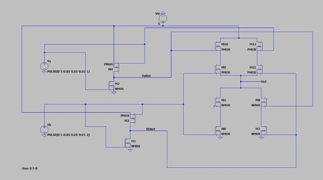
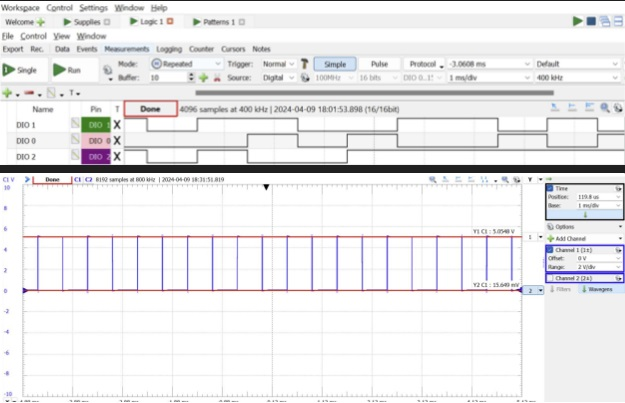
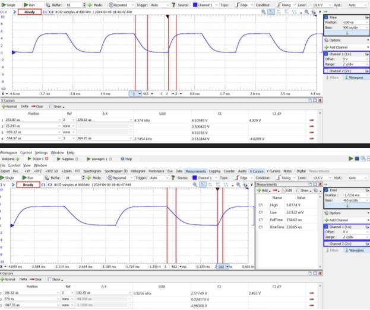

BJT-Based Amplifier Circuit
Project Overview
Introduction:
- Title: BJT-Based Amplifier Circuit
- Duration: March 2024 - March 2024
- Role: Project Engineer
- Technologies Used: BJT Transistors, Resistors, LT Spice, Waveforms Software, Analog Discovery 2
Summary:
In this project, I explored the design and implementation of a Bipolar Junction Transistor (BJT) based common collector amplifier. The primary objective was to achieve a linear amplifier design that operates effectively under low current conditions. The choice between using a BJT and a MOSFET was pivotal; BJTs were selected due to their superior performance in low current scenarios and better linearity.
Key Decisions and Implementation:
- Transistor Choice: Selected BJT over MOSFET for better low current performance and linearity.
- Circuit Topology: Chose the common collector configuration because it provided a voltage gain close to one, which was necessary for our design requirements.
- Simulation and Testing: Utilized LTspice for circuit simulations to model the BJT and analyze circuit behavior. Waveforms software and Analog Discovery 2 were employed for hardware testing to validate simulation results and measure real-world performance.
Technologies and Tools:
- LT Spice: Used for detailed circuit simulation and schematic design.
- Waveforms Software: Utilized for managing digital inputs and real-time output measurement.
- Analog Discovery 2: Deployed for generating digital signals and oscilloscope functionality to observe and adjust the circuit’s performance dynamically
Project Achievements
- Effective Low Current Design: Demonstrated that BJTs require significantly less current than MOSFETs for similar applications, making them more practical for our design.
- Optimized Gain: Achieved an amplifier gain of approximately 0.965, close to the theoretical expectation of 0.97.
- Validation: Confirmed simulation models with practical tests, showing over 95% accuracy in gain and linearity measurements.
Gallery/Visuals
LTSpice Circuit Diagram:
Logic Analyzer Output using Waveforms Software:
Timing Measurement with Analog Discovery 2:
Challenges and Solutions
- Challenge: Ensuring the BJT operates linearly in a design constrained by low current availability.
- Solution: Through detailed simulations and iterative testing, optimized the circuit design to maximize linearity while operating within current limitations.
Future Directions
- Higher Performance Variants: Explore designs that might allow even lower current operation without sacrificing performance.
- Integration into Complex Systems: Consider integrating the amplifier into more complex electronic systems to demonstrate its utility in practical applications.